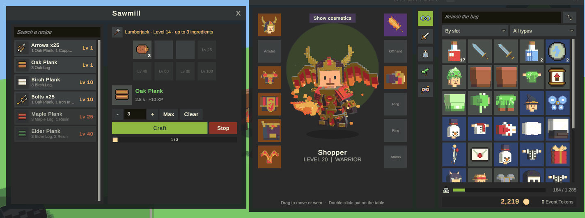
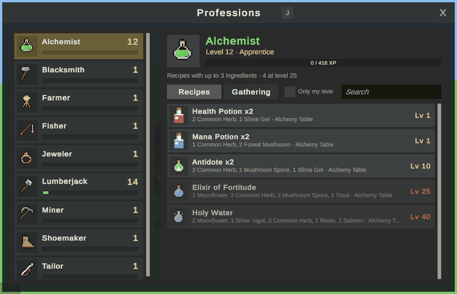

Professions
Professions are an add-on: every character has nine trades with their own levels, gathers materials at nodes in the world and crafts at stations with recipes that need more ingredients as the trade grows. A crafter can also work for another player for a fee. This page covers how it plays, the windows, the data behind it, the sample and what the server checks.
How it works
- A player clicks a tree, a rock, a fishing spot, a field or a herb in the world. The character works on it for a few seconds; moving, dying or someone else finishing first stops it. When it ends, the node gives its materials and profession experience, then hides and grows back.
- At a station in town (a forge, a loom, a cauldron) the player puts ingredients on the table, or picks a recipe to fill it. What the ingredients make shows on the right, and Craft makes it as many times as asked.
- Every piece gives profession experience. Levels unlock bigger recipes: at level 1 a recipe may use 2 different ingredients, and each step adds one, up to 8 at the top level. Higher levels also gather and craft faster.
Professions are inspired by the trades of Dofus: every character has all of them from level 1, and the number of ingredients is what a level unlocks.

For the player
The professions window
J opens it, or the crossed tools on the toolbar. The left column lists every profession with its level and an experience bar. The picked one shows:
- Its level, rank (Apprentice, Journeyman, Expert, Master, Grandmaster), experience to the next level, and how many ingredients its recipes may use now and at which level the next one comes.
- Recipes: every recipe of the profession with its ingredients, where it is made and the level it needs, in red while out of reach. Only my level hides the ones out of reach.
- Gathering: what it gathers, from which level, what each gives with its chance and how long it takes at the player's level.

Gathering
Click a node like an NPC: the character walks to it and starts. The animation loops until it ends. Only one player at a time works on a node; others read "Someone is already gathering here." A node below the player's level says which level it needs. Items go to the bag, or to the bank when the bag is full, and never get lost.
Crafting at a station
Clicking a station opens its table and the bag next to it.
| Part | What it does |
|---|---|
| Recipe list | The recipes made here. A click fills the table with the recipe's ingredients. |
| Table | Eight slots. The ones past the profession's level show the level that unlocks them. Double click a bag item, or drag it onto the table, to add it; click a slot to take it off. |
| Result | What the ingredients make, or why it can't be made: the level, a missing item. Seconds per piece, experience and gold. |
| Times | How many to make in a row. Max uses as many as the bag allows. |
| Craft, Stop | Starts and stops. Leaving the station or moving also stops. |
Recipes are found by their ingredients, so a player who knows a mix can make it without opening the list.
Crafting for another player
A crafter with enough level (25 in the sample) can make things for someone who lacks the level. Both stand at the same station:
- One of them right clicks the other: Invite to my workshop (the crafter asks) or Ask to craft for me (the client asks). The other accepts.
- The table opens for both. The crafter picks whose ingredients are used. The client sets the fee in gold. Changing either term unlocks both sides.
- Both press Lock terms. Whoever gives the ingredients fills the table; the other sees it live.
- The crafter presses Craft one for each piece. The client receives every piece, and the fee is paid with the first one.
- Either side ends the session. Walking away, dying or leaving the game ends it too, with no loss for anybody.
The server makes each piece with the ingredients of whoever gives them and hands the result to the client. Nobody gives their items or gold to the other side at any point, so a session can't be used to steal.
Professions and recipes in the Game Database
The add-on adds a Professions group to the Game Database with two lists.
Profession
| Field | What it does | Default |
|---|---|---|
Max Level (maxLevel) |
Top level. | 100 |
Base Experience (baseExperience), Growth (growth) |
Experience from level 1 to 2, and how fast it grows: base × level ^ growth. | 10, 1.5 |
Ranks (ranks) |
Titles by level. | Apprentice 1, Journeyman 20, Expert 40, Master 60, Grandmaster 80 |
Slots (slots) |
How many ingredients a recipe may use from each level. | 2 at 1, 3 at 10, 4 at 25, 5 at 40, 6 at 60, 7 at 80, 8 at 100 |
| Craft Time At Start / At Top | Share of a recipe's seconds at level 1 and at the top level. | 1, 0.4 |
| Experience Per Ingredient | Experience per piece for recipes that set none: this times their number of ingredients. | 10 |
Service Level (serviceLevel) |
Lowest level that may craft for other players. | 50 (25 in the sample) |
| Craft Animation, Gather Animation | Looped while crafting at a station that sets none, and while gathering. | |
Gatherables (gatherables) |
What it gathers: id, name, level, seconds at that level and at the top, experience, character experience, and drops with amount and chance. Nodes point at them by id. | |
| Color | Of its name and experience bar. |
Recipe
| Field | What it does | Default |
|---|---|---|
| Profession | Whose level it needs and who gets the experience. | |
| Station | The kind of station, like forge or loom. Empty: made anywhere. |
forge |
| Ingredients | Up to 8 different items with amounts. | |
| Result, Amount | What it makes and how many per piece. | 1 |
| Level | Profession level it needs. 0 uses the level that unlocks its number of ingredients. | 0 |
| Experience | Per piece. 0 uses the profession's experience per ingredient. | 0 |
| Seconds | Per piece at level 1. | 3 |
| Gold | Per piece, paid by whoever gives the ingredients. | 0 |
In the world
Gathering nodes
A node is an object with three components: Npc (with an empty greeting and a Gather option), Gather Node (GatherNode: profession, gatherable id, seconds to grow back, the model to hide) and a Network Identity, plus a collider to click. The sample's prefabs in Addons/Professions/Samples/Prefabs are ready to drop in a map; give each copy its own NPC id.
Stations
A station is an Npc with an empty greeting and a Craft option (CraftOption): the station kind its recipes use, the profession shown on the table and the animation to loop. Two stations with the same kind share their recipes.
Quests, items and GM commands
- Quest objectives Craft (
CraftObjective: an item or anything of a profession) and Gather (GatherObjective: a profession and optionally one gatherable). - Item effects Profession Experience and Profession Level, for one profession or all of them. They are not used up when no profession can take them.
/profession id level [player]sets a level;/profession listlists the ids.
The sample
KitARPG > Professions > Add Sample Content, or the kit update Professions sample content, adds to a game made from the starter:
| Profession | Gathers | Crafts at | Makes |
|---|---|---|---|
| Lumberjack | Oak, birch, maple and elder trees | Sawmill | Planks, arrows, bolts |
| Miner | Rocks, copper, iron and silver veins, gem clusters | Smelter | Ingots, bricks |
| Fisher | Ponds, rivers, deep water | Cooking Fire | Grilled trout, salmon steak, stews |
| Farmer | Wheat, flax and cotton fields | Mill, Cooking Fire | Flour, thread, bread |
| Alchemist | Herbs, mushrooms, moonflowers | Alchemy Table | Health and mana potions, antidote, elixir, holy water |
| Blacksmith | Forge | Swords, axes, maces, spears, crossbows, knight gear | |
| Jeweler | Jeweler's Bench | Rings, amulets, cut gems | |
| Tailor | Loom | Cloth, hats, robes, capes | |
| Shoemaker | Cobbler's Bench | Boots and gloves |
Nodes go in Forest, the easy ones near the entrance. Workshops line the south road of Town, next to Orla, who gives the first quest (Learning a Trade) and sells Crafter's Notes, Master's Manuals and coal. The models are voxel props made by Art/Tools/make_voxel_professions.py, and the icons by Art/Tools/make_profession_icons.py.
What the server checks
- Gathering: the node is in reach, not taken by someone else, grown back, and the level is enough. Every frame of the work it checks the player stayed still and alive.
- Crafting: the station is in reach and open for that player, the table matches a recipe of that station kind, the level and number of ingredients, the materials and gold in the bag, room for the result, and no trade in progress.
- Crafting for another player: one session per player, both at the station, each term set only by its owner, both locks before any piece, the crafter's level for every piece, and the fee checked and paid on the server.